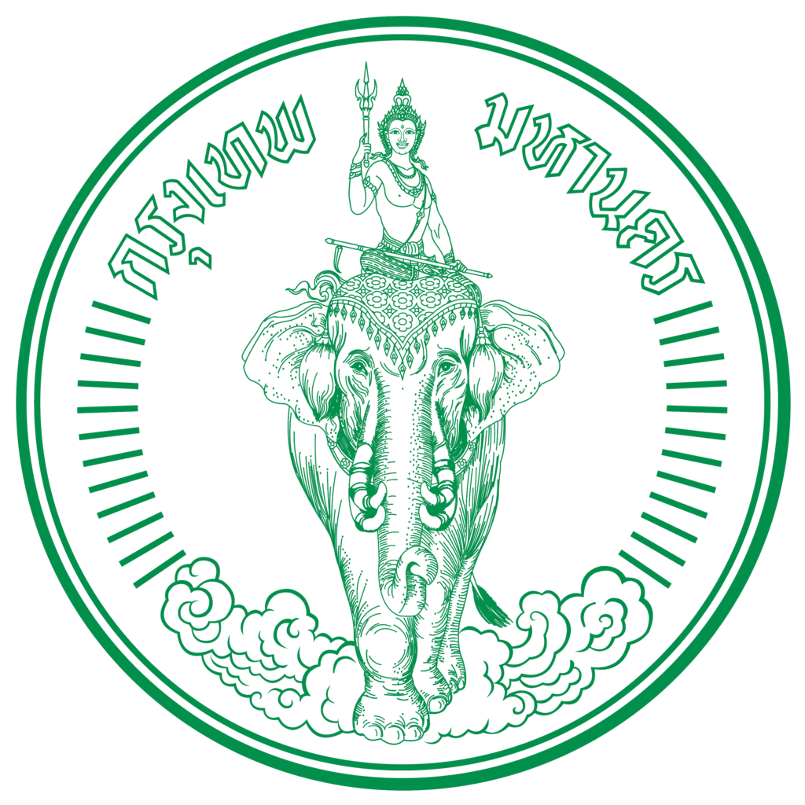
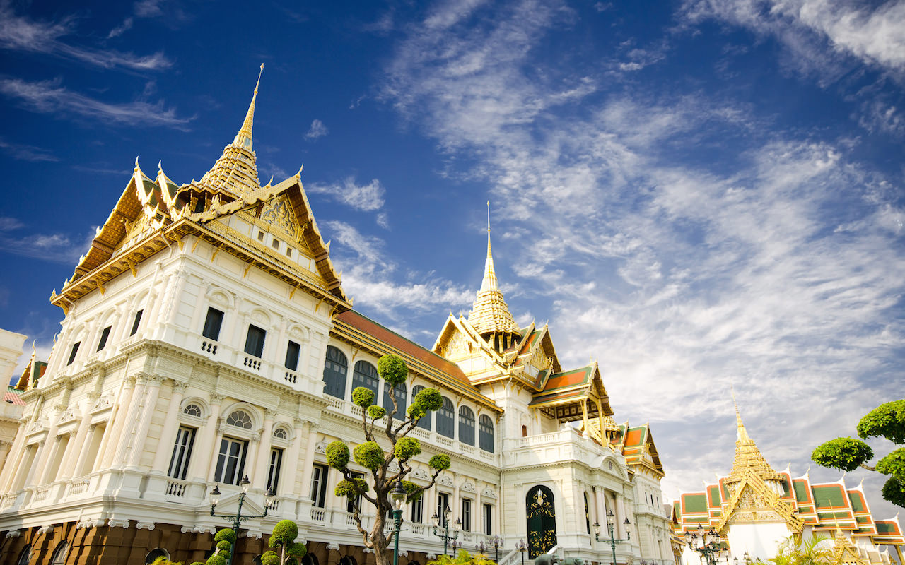
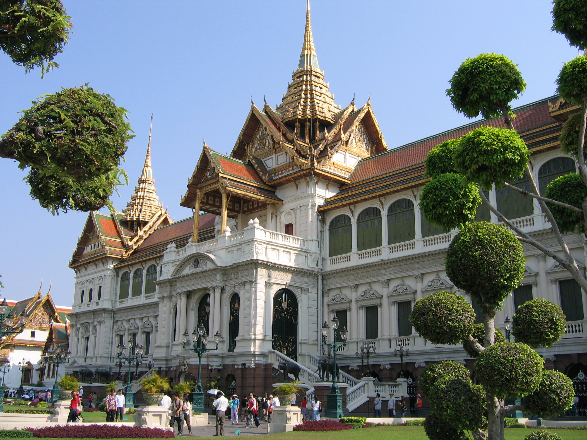
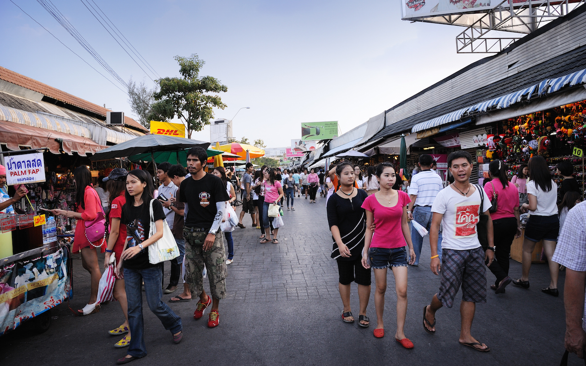
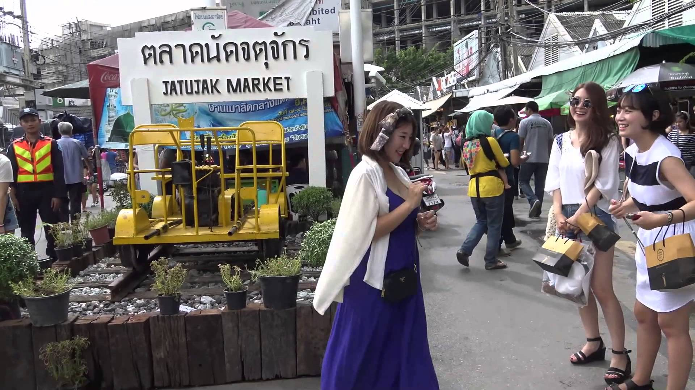

กรุงเทพมหานคร

คำขวัญประจำจังหวัด
กรุงเทพฯ ดุจเทพสร้าง เมืองศูนย์กลางการปกครอง วัด วัง งามเรืองรอง เมืองหลวงของประเทศไทย
กรุงเทพมหานคร เป็นเมืองหลวงและนครที่มีประชากรมากที่สุดของประเทศไทย เป็นศูนย์กลางการปกครอง การศึกษา การคมนาคมขนส่ง การเงินการธนาคาร
การพาณิชย์ การสื่อสาร และความเจริญของประเทศ เป็นเมืองที่มีชื่อยาวที่สุดในโลก ตั้งอยู่บนสามเหลี่ยมปากแม่น้ำเจ้าพระยา มีแม่น้ำเจ้าพระยาไหลผ่านและแบ่งเมืองออกเป็น
2 ฝั่ง คือ ฝั่งพระนครและฝั่งธนบุรี โดยกรุงเทพมหานครมีพื้นที่ทั้งหมด 1,568.737 ตารางกิโลเมตรมีประชากรตามทะเบียนราษฎรกว่าห้าล้านคน
ทำให้กรุงเทพมหานครเป็นเอกนคร (primate city) จัด และศูนย์ชุมชนอื่นของประเทศไทยด้อยความสำคัญลง มีผู้กล่าวว่า กรุงเทพมหานครเป็น
"เอกนครที่สุดในโลก" เพราะมีประชากรมากกว่านครที่มีประชากรมากเป็นอันดับสองถึงสี่สิบเท่า
พระบรมมหาราชวัง

เมื่อพระบาทสมเด็จพระพุทธยอดฟ้าจุฬาโลกมหาราชปราบดาภิเษกขึ้นเป็นปฐมกษัตริย์แห่งราชวงศ์จักรี พระองค์ทรงย้ายราชธานีจากกรุงธนบุรีมายังฝั่งตะวันออกของแม่น้ำเจ้าพระยาและโปรดเกล้าฯ
ให้สร้างพระราชวังหลวงขึ้นเพื่อเป็นศูนย์กลางการปกครองของประเทศและเป็นที่ประทับของพระมหากษัตริย์ การก่อสร้างพระราชวังหลวงเริ่มขึ้นพร้อมกับการสร้างพระนครเมื่อ
พ.ศ. 2325 โดยสร้างขึ้นในบริเวณที่เคยเป็นที่อยู่ของพระยาราชาเศรษฐีและชาวจีนทั้งหลาย ดังนั้น พระองค์จึงโปรดเกล้าฯ ให้ย้ายไปอยู่สถานที่แห่งใหม่ตั้งแต่คลองใต้วัดสามปลื้มจนถึงคลองเหนือวัดสามเพ็ง
เริ่มดำเนินการในวันที่ 6 เมษายน พ.ศ. 2325 หลังพระราชพิธียกเสาหลักเมือง 1 วัน และมีการเฉลิมพระราชมนเฑียรในวันที่ 13 มิถุนายน
พ.ศ. 2325 แต่ขณะนั้นพระราชมนเฑียรสร้างด้วยเครื่องไม้และสร้างเสาระเนียดรายรอบพระราชวัง เพื่อประกอบพระราชพิธีปราบดาภิเษก
ต่อมาใน พ.ศ. 2326 พระองค์จึงโปรดเกล้าฯ ให้สร้างพระราชมนเทียร พระมหาปราสาท เปลี่ยนเสาระเนียดจากเครื่องไม้เป็นก่อกำแพงอิฐ
สร้างประตูรายรอบพระบรมมหาราชวัง ตลอดจนสร้างพระอารามในพระราชวังหลวง คือ วัดพระศรีรัตนศาสดาราม เพื่อเป็นที่ประดิษฐานพระพุทธมหามณีรัตนปฏิมากร
(พระแก้วมรกต) เมื่อสร้างพระราชนิเวศน์มนเฑียรเป็นการถาวรแล้วโปรดเกล้าฯ ให้มีการพระราชพิธีบรมราชาภิเษกเต็มตามแบบแผนราชประเพณีอีกครั้งหนึ่งใน
พ.ศ. 2328 พระบรมมหาราชวังได้มีการก่อสร้างเพิ่มเติมขยายอาณาเขตและบูรณปฏิสังขรณ์มาในทุกรัชกาล ในรัชสมัยพระบาทสมเด็จพระจอมเกล้าเจ้าอยู่หัว
ทรงพระกรุณาโปรดเกล้าฯ ให้สถาปนาสมเด็จพระเจ้าน้องยาเธอ เจ้าฟ้าจุฑามณี กรมขุนอิศเรศรังสรรค์ พระราชอนุชา ขึ้นเป็นพระบาทสมเด็จพระปิ่นเกล้าเจ้าอยู่หัว
จึงทรงบัญญัติให้เรียกพระราชวังหลวงว่า พระบรมมหาราชวัง นั่นคือ ทรงบัญญัติให้ใช้คำว่า “บรม” สำหรับฝ่ายวังหลวง และ “บวร”
สำหรับฝ่ายวังหน้า พระราชวังบวรสถานมงคลหรือวังหน้าจึงเรียกว่า “พระบวรราชวัง” เมื่อพระบาทสมเด็จพระปิ่นเกล้าเจ้าอยู่หัวเสด็จสวรรคตแล้ว
พระราชวังหลวงก็ยังคงใช้ว่า พระบรมมหาราชวัง มาจนกระทั่งปัจจุบัน

พระบรมมหาราชวัง หรือพระราชวังพระนคร เป็นที่ประทับของพระมหากษัตริย์สมัยรัตนโกสินทร์ ตั้งแต่รัชสมัยพระบาทสมเด็จพระพุทธยอดฟ้าจุฬาโลกมหาราช
จนถึงรัชสมัยพระบาทสมเด็จพระจุลจอมเกล้าเจ้าอยู่หัว ตั้งอยู่ที่แขวงพระบรมมหาราชวัง เขตพระนคร กรุงเทพมหานคร ปัจจุบัน พระบรมมหาราชวังเป็นสถานที่ท่องเที่ยว
ที่ได้รับความนิยมมากเป็นอันดับที่ 16 ของโลก โดยมีผู้เข้าเยี่ยมชมในปี พ.ศ. 2549 เป็นจำนวนถึง 8,995,000 คน
ตลาดนัดจตุจักร

ตลาดนัดจตุจักร หรือ ตลาดนัดสวนจตุจักร (อังกฤษ: Jatujak Market) หรือที่เรียกกันอย่างย่อ ๆ ว่า JJ Market เป็นตลาดนัดที่ใหญ่ที่สุดในโลก
ตั้งอยู่ในกรุงเทพมหานคร มีจำนวนแผงค้าทั้งหมดมากกว่า 8,000 แผงค้า แบ่งเป็น 27 โครงการ มีสินค้า 8 ประเภท ได้แก่ ผักและผลไม้
เสื้อผ้า สัตว์เลี้ยง ต้นไม้ อาหารปรุง อาหารสำเร็จรูป อาหารสด และเบ็ดเตล็ด ตลาดแห่งนี้มีความเป็นมายาวนานกว่า 60 ปี เริ่มตั้งแต่ปี
พ.ศ. 2491 ในสมัยจอมพล ป. พิบูลสงคราม เป็นนายกรัฐมนตรีรัฐบาลมีนโยบายให้จัดตั้งตลาดนัดขึ้นในทุกจังหวัด สำหรับกรุงเทพนั้นได้เลือกสนามหลวงเป็นสถานที่จัดตลาดนัด
แต่เพียงไม่ถึงปีทางราชการก็ย้ายตลาดนัด ไปอยู่ในพระราชอุทยานสราญรมย์แล้วจึงย้ายออกไปตั้งอยู่บริเวณสนามไชย และย้ายตลาดนัดกลับไปอยู่ที่สนามหลวงในปี
พ.ศ. 2501

ข้อมูลติดต่อ
การท่องเที่ยวแห่งประเทศไทย (สำนักงานใหญ่) 1600 ถ.เพชรบุรีตัดใหม่ แขวงมักกะสัน เขตราชเทวี กรุงเทพฯ 10400
โทรศัพท์. 0 2 250 5500
ข้อมูลผู้จัดทำ
นายอภิวัฒน์ แซ่ลิ้ม รหัสประจำตัว 5896005203